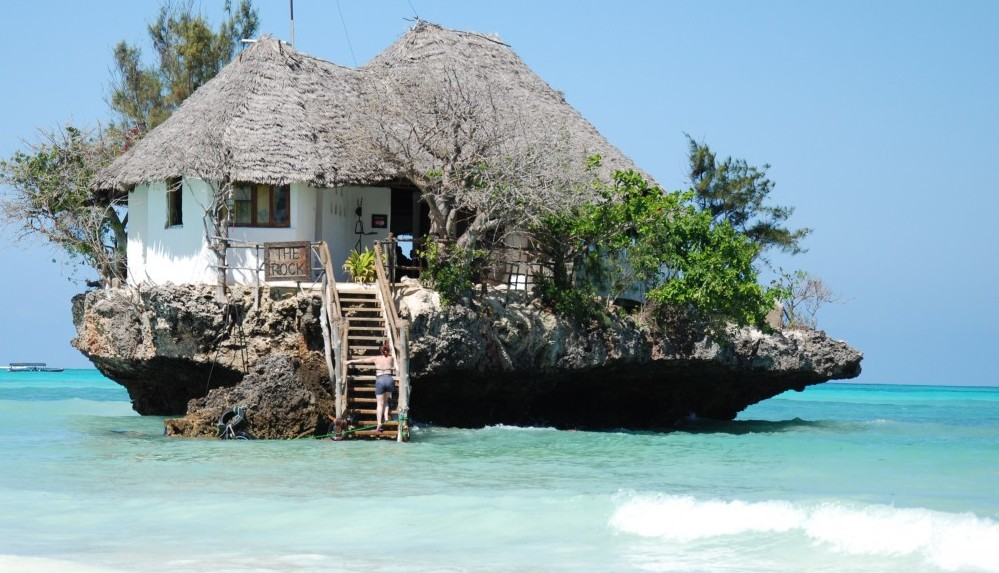
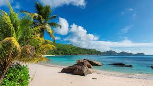
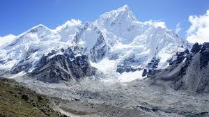
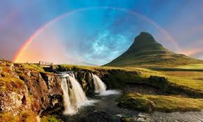

Final Destination: Zanzibar

Obiective turistice Zanzibar, Tanzania – ghid turistic 2020
Cele mai multe obiective turistice din Zanzibar se afla in capitala, Stone Town – orasul sultanilor
arabi, practic, centrul istoric al arhipelagului, cunoscut si sub numele de “orasul de piatra”. Numele
pe care orasul l-a primit are legatura cu faptul ca a fost construit din piatra – de fapt, omanezii au
construit cladiri din piatra, un aspect pe care la vremea respectiva localnicii nu l-au aprobat, acestia
construind pana atunci doar din lemn.
Seychelles

Seychelles is an island nation in the Indian Ocean, composed of 115 islands not far from East Africa. It
has the smallest population out of all the African countries that we will visit on our cruise.
Beaches like those of Seychelles, Praslin, La Digue, Curieuse, which with their granite blacks are one
of the most renowned destinations and a dream for many vacationers. The cruise to Seychelles also
reserves the possibility of excursions, marine safaris and an encounter with a colony of giant tortoises
at the Botanical Garden of Victoria. Their cuisine is heavily influenced by different regions in the
world and is very varied. Creole cuisine combines exotic dishes with Indian and Asian ones, the spicy
flavors of the Orient with some European recipes, all to the delight of our palate.
Everest

It's official: Kenton Cool and Robert Richard Lucas, both from the U.K., and David Liano of Mexico,
reached the top of Mount Everest on Thursday, becoming the first foreigners to do so in roughly two
years. They were assisted by three Nepalese Sherpas, who acted as their guides. Ang Tshering Sherpa,
president of the Nepal Mountaineering Association, made the announcement just after 8 a.m. local
time, reports the BBC.
5 motive pentru care să vizitezi Islanda

Islanda a devenit una dintre destinațiile hip ale Europei și din ce în ce mai mulți români vor să ajungă
în această mică țară nordică. La prima vedere te-ai putea întreba de ce? Fiindcă Islanda e un teritoriu
vulcanic, cu o intensă activitate geo-termală, care, practic, nu „produce” mare lucru.
Dar magia Islandei constă în multe elemente. Pe de o parte e vorba despre peisajele fabuloase, care
includ câmpuri de lavă, vulcani, ghețari, cascade și gheizere. Pe de alta, cultura locului e cel puțin
la fel de energică precum teritoriul. De la o scenă gastronomică din ce în ce mai interesantă la muzee
de nișă și festivaluri de artă și de muzică. La care se adaugă un spa fenomenal și, desigur,
posibilitatea de a vedea spectacolul Aurorei Boreale.